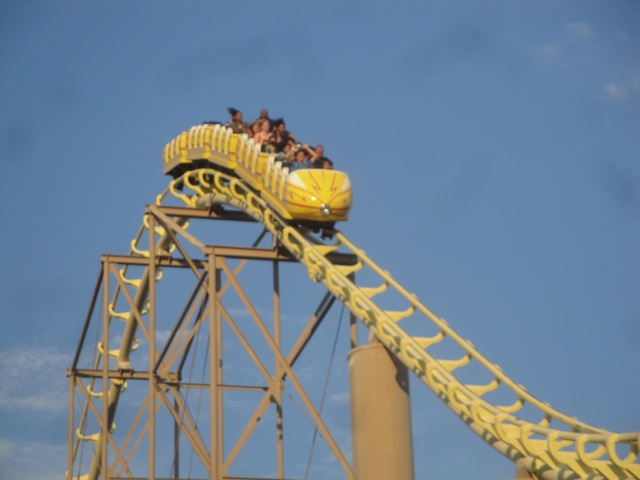
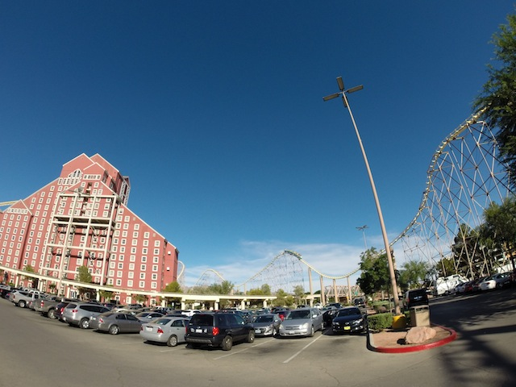
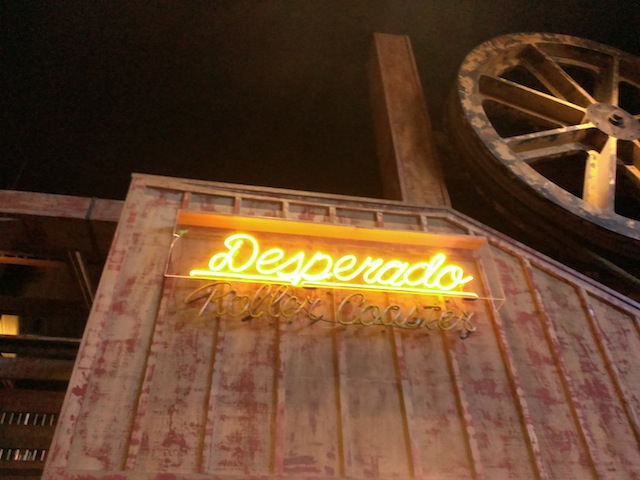
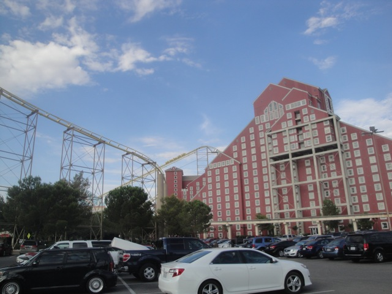
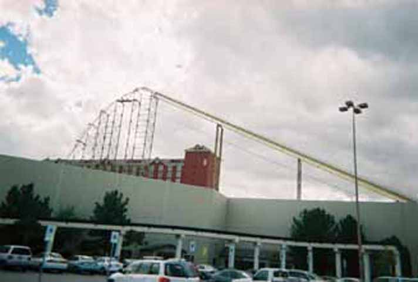

| |
Desperado Review

We're here at Buffalo Bills where we're going to be riding the main reason you decided to stop here, Desperado. After walking inside the casino and paying the $10 to ride it, you get in, pull down the lap bar, and fasten the seatbelt. HOORAY!!!! We're off!!! We climb out of the casino and begin reaching for the heavens. As we finally reach the top of the hill, we begin to look around. You see nothing but miles and miles of sand (Ok, you can also see California, but really. Its just more sand). But as you start to tip down, you see a strip of yellow track dive into a microscopic hole. Then you fall. You get a great sensation of speed as the tunnel expands and swallows you whole. As you race out of that tunnel, then you rise up into a turn. This turn doesn't hurt at all, but you can see that is a clumsy and awkward element that almost makes the ride funny in a way. There's even a little bit of airtime as you then head back down. You just are heading down a straight non-steep drop before it suddenly becomes a curved drop at the bottom. Truely, a peice of marvel engineering from the good folks at Arrow right there. We then head back up another hill thats curved where you can clearly see the coat hanger transitions, but hey. Nothings painful and I'm having a blast. This is really good so far. Another turn at the top thats pretty sharp before heading down a non-steep drop and gaining some speed. We then fly over an airtime hill that while doesn't seem impressive on the ground since its so big and not steep. On the ride however, it provides some really good ejector air due to its triangle shape. We then head into another triangle airtime hill, only this time, its got a little bit of turn to it, so you not only get ejector air, but laterals as well. SWEET!!!! The ride then just goes through some straight track, and leads into a tight turn straight into the mid course brakes. So far, this ride kicks ass!!! Ok, after this we sort of just go through these meandering curves that do give us some speed. So I guess this counts as a drop. Umm, cool? We then go through a small little hill before going down a non steep drop with some turns, going fast now and heading straight into the fake mountain where we're now going through an upward helix. The inside of the fake mountain is kind of cool and a fun helix. At the end when we go back into the real world, we drained a lot of speed, but we've still got some potential. We head down another tiny little bunny hop until we sadly have to come straight into the brake run. Honestly, I found Desperado to be a really good coaster and one of the more underrated coasters in the roller coaster community. It tends to get ignored not only due to its location in the middle of nowhere on the California/Nevada State Border, but when people do talk about it, they'll usually criticize it for its awkward and poorly designed transitions, and yeah. They're pretty clumsy, but you know what? I don't care. They aren't painful at all, the ride has great speed and even some great ejector air. And I'd even add that the Coat Hanger turns actually add some charm to the ride. So yeah. If you're ever driving by Buffalo Bills. Stop on by cause this ride is really just freaking awesome. =)
8/10
Location: Buffalo Bills
Opened: 1994
Built by: Arrow
Last Ridden: July 11, 2014
Desperado Photos






Home
|